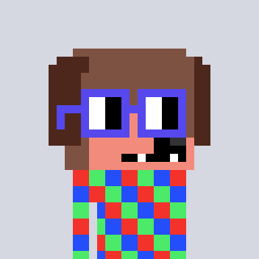
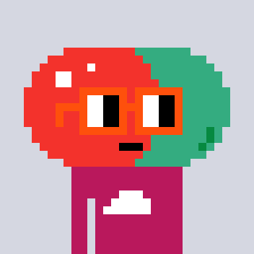
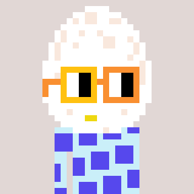
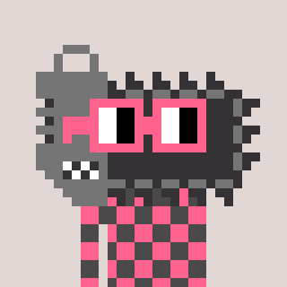
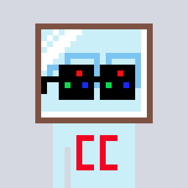
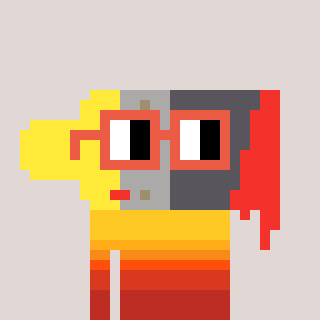

APR · 17
Drum Room crosses 100k taps
Global kick counter hit six figures overnight. Tezos mint queued.
Drum · MusicEvery post is reformatted into the same 1:1 square, the same algorithmic rhythm.
Your audience, your reach, your archive — rented from someone else's server.
A song, a painting, a joke — all flattened into the same unit of attention.
Global kick counter hit six figures overnight. Tezos mint queued.
Drum · MusicA Kanye mash, rebuilt as an 8-bar loop, rendered through a pixel visualiser.
Art · MusicNotes from the court. New paddle. Still losing to my neighbor.
Field notesAssigned on arrival, deterministic from the wallet or session. The masthead is different for everyone.









Box scores, bad takes, the slow season.
Late-game rotations, shot-chart obsessions.
America's fastest-growing beef.
A growing log of paddles, grips, and regrets.
Unsolicited testimony. Apply generously.
Notes on concrete, glass, and LA skies.
Kanye, re-scored through a Nouns-synth.
A browser-native Noun factory. Seed → SVG → mint.
Static at the edge, dynamic where it matters. No framework lock-in, no platform rent — just a site that happens to talk to a blockchain.
Every block becomes a standalone Farcaster mini-app.
Multi-chain identity. Coin of the station, on a second rail.
Local cable, reimagined. Neighborhood as newsroom.
Risograph, signed + numbered, mailed to collectors.